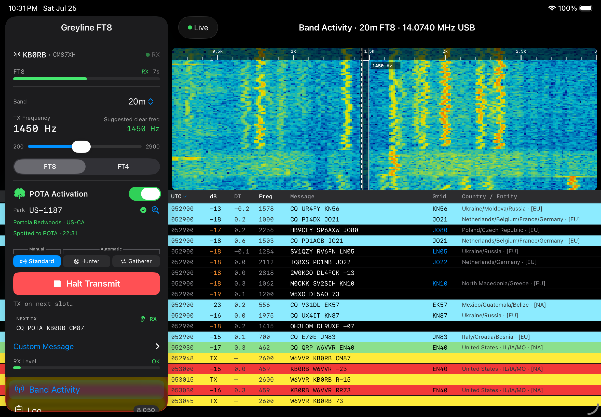

For iPad & iPhone
FT8 & FT4 Digital Modes without the PC
Greyline FT8 is a full-featured digital mode radio app. Built by a ham for other hams, it provides a real-time waterfall, automated QSO modes, live spot maps, QRZ log integration, callsign lookups, and seamless audio interface support. All this with no heavy PC required. In the field, pounds count and the fewer devices you need to carry, charge, operate, and manage the more successful your activation will be.

Looking for information on connecting to radios? Click here
